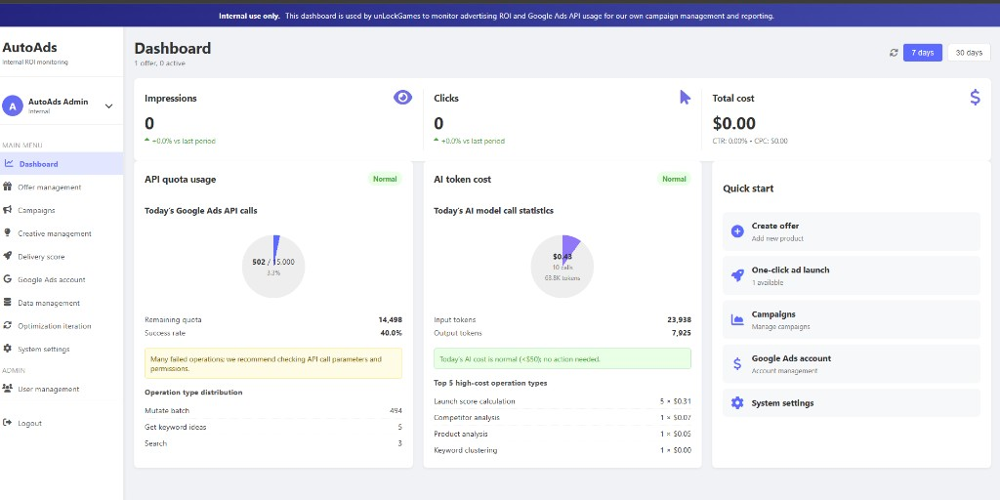

AutoAds – Design Documentation
Internal tool for unLockGames · Design documentation for Google Ads API application
1. Overview
AutoAds is an internal-only dashboard used by unLockGames to monitor advertising ROI and Google Ads API usage. It supports our own campaign management and reporting for the promotion of our website, unlockgames.org (a deals, cashback, and buying-guide platform). The tool is not offered to third parties.
2. Purpose
We use the Google Ads API to:
- Manage our Search campaigns and keywords that drive traffic to unlockgames.org
- Pull campaign, ad group, and keyword-level performance data (impressions, clicks, cost, CTR)
- Monitor API quota usage and success rates to ensure stable integration
- Optimize ad spend and ROI in line with the services we offer on our website
3. Main Features
- Dashboard: Summary of impressions, clicks, total cost, CTR, and CPC
- API quota usage: Daily Google Ads API call count, remaining quota, success rate, and operation-type distribution (e.g. Mutate batch, Get keyword ideas, Search)
- Campaign management: Offer management, one-click ad launch, campaign and Google Ads account management
- Data and optimization: Data management, delivery score, and optimization iteration
4. Tool Screenshot
Below is a screenshot of the AutoAds dashboard showing the internal ROI monitoring interface and Google Ads API usage.

Figure 1: AutoAds dashboard – internal use only. Used by unLockGames to monitor advertising ROI and Google Ads API usage for campaign management and reporting.
5. Alignment with Our Website
unLockGames (unlockgames.org) provides cashback deals, promo codes, buying guides, and free online games. We use Google Ads to promote this website to users searching for deals and coupons. AutoAds and the Google Ads API are used solely to manage and report on these campaigns, so our use of the API is consistent with the services listed on our site.
— unLockGames · Internal design documentation